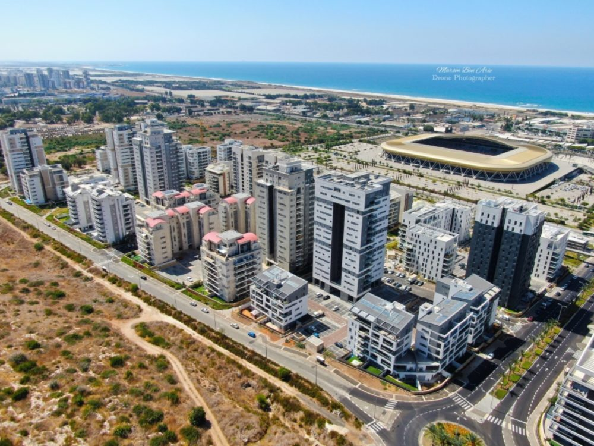
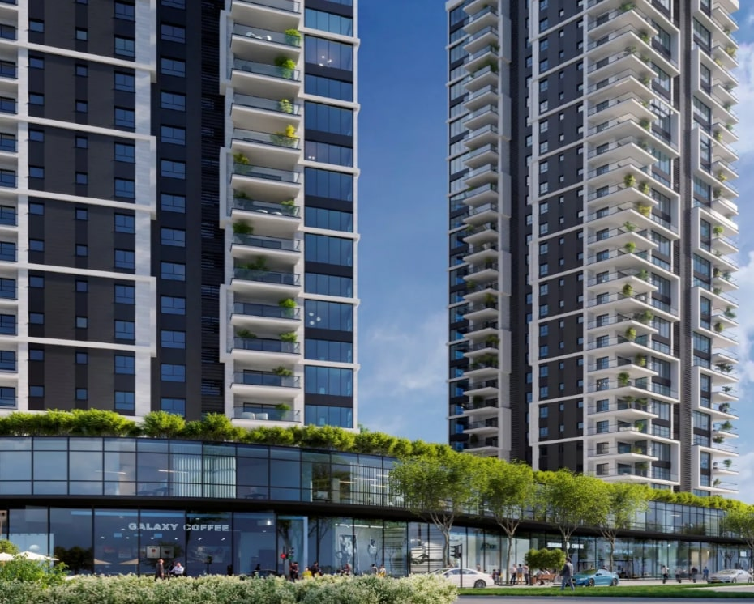
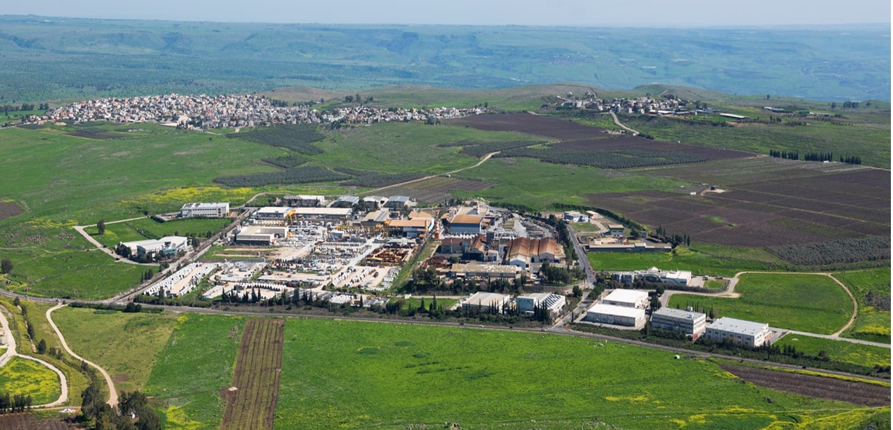
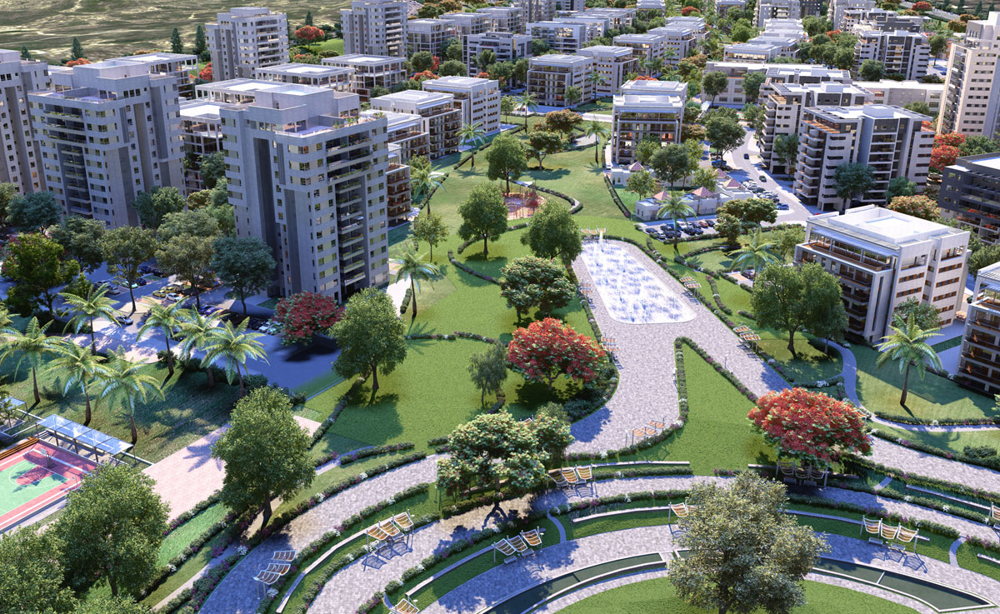

חריש, העיר החדשה, ממוקמת על גבעות ירוקות בסמוך למחלף עירון של כביש 6, בגובה 110 מטר מעל פני הים ובמרחק נסיעה של 10 דקות מפרדס חנה-כרכור. אוכלוסיית העיר מונה כיום למעלה מ-35,000 תושבים

שכונת נאות פרס הינה שכונה חדשה ויוקרתית במיקום הכי נחשק בחיפה. המתחם כולל 4 בנייני מגורים בני 8 קומות עם נוף לים ובתכנון מוקפד המאופיין בקווים נקיים ובחללים מרווחים. תמהיל הדירות במתחם כולל מגוון דירות 3-5 חד' מרווחות עם מרפסות גדולות לכיוון הים, במפרט יוקרתי ומודרני
בפרויקט 55 דירות יוקרה בבנייני בוטיק נמוכים, רק 2 דירות בקומה, סטנדרט פרימיום ודיוק בפרטים הקטנים. עם מגוון דירות של 4,5 חדרים, דירות גן ופנטהאוזים עם מרפסות מרווחות לנוף עוצר נשימה
שכונת רובע יזרעאל בעפולה גובלת בכביש 65 וסמוכה לתחנת הרכבת. השכונה, כוללת כ- 4,600 יחידות דיור. השכונה נהנית מהפארק העירוני של עפולה הנמצא בצמוד לשכונה, ובו מתקיימים מופעים, פסטיבלים והצגות. כמו כן ישנו מתחם קניות גדול הנמצא בסמוך
שכונת גבעת אלונים הינה קהילת המגורים הגדולה והמובילה באזור הקריות. חברת שרביב החלה בהקמתה לפני כעשור ובונה בה כ-1250 יחידות דיור. הגבעה ממוקמת מול גבעת טל וגבעת רם ונמצאת במיקום מרכזי ונגיש, סמוך לצומת סומך (כביש 6). גבעת אלונים הינה קהילת מגורים אטרקטיבית המשלבת איכות חיים עירונית באווירה כפרית רגועה.
בשכונה מגדלים בני 10-18 קומות ובנייני בוטיק בני 6-7 קומות

מדובר בפרויקט בינוי מהגדולים בצפון הממוקם על מורדות הר הכרמל, וישלב סביבה עירונית בפארק מטרופוליני ענק עם שני אגמים, מוסדות חינוך וציבור, שטחי מסחר ומשרדים, טבע ירוק ומקווי מים
הפרויקט יכלול כ-5,000 יח"ד על שטח של 2,500 דונם בציר שבין קיבוץ יגור והעיר נשר, על קרקע פרטית בבעלות כלל נדל"ן

פארק צ.ח.ר משתרע על שטח של 850 דונם, נכון להיום הוא מאוכלס ב -50 מפעלים ועסקים ומועסקים בו כ-1500 עובדים.
המפעלים הקיימים הם תערובת איכותית של מפעלי היי-טק, תעשייה כבדה, תוצרת חקלאית ועוד

אור ים מתוכננת להכיל כ-3480 יחידות דיור והיא משתרעת על פני 1060 דונם הממוקמים בשטח שבין שכונת אורות רבין, כביש החוף, צומת פלי"ם, וכביש מס' 4. תמהיל הדירות באור ים מגוון והטרוגני ומציע את כל היתרונות בשכונת מגורים אחת